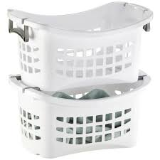

Don't forget these!

Laundry Basket
Whether you choose to assign one basket to each member of your family, or simply to separate clothes by color, it's important to have laundry baskets on hand. They can also work double-duty by holding orphaned socks.

Spray bottles
Empty spray bottles will be put to good use in your laundry room. Use one to spray water as you iron, or mix a small amount of dish soap with water and keep the mixture on hand to pretreat stains.
Mesh Bags
Look for mesh bags in all shapes and sizes based on your laundry needs. They're perfect for your lingerie and other delicates. Mesh bags also can be used to separate and secure baby clothes and socks.
Drying racks
Running out of room to hang your delicates and hand washables? Opt for a folding drying rack. For shirts and dresses, select a wall mounted laundry valet or clothing rack. Lastly, for garments that need to lay flat, look for a sweater drying rack.
Hangers
They come in wood, plastic, metal, satin, and more. So how can you pick the right hangers for your family? Wooden hangers are more elegant, while plastic hangers are strong and economical. Metal hangers are sleek space savers, while satin protects your delicates perfectly.
Ironing board
Add an ironing board to your laundry room for easy access. A built-in ironing center or wall mounted ironing board are both great options for keeping your laundry room neat and organized.